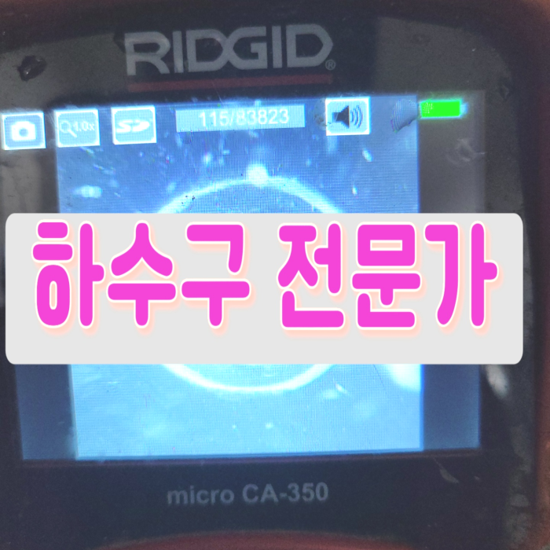
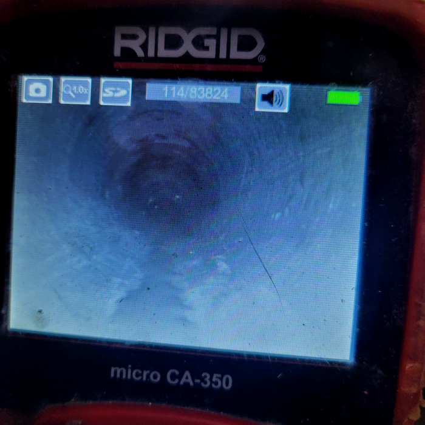
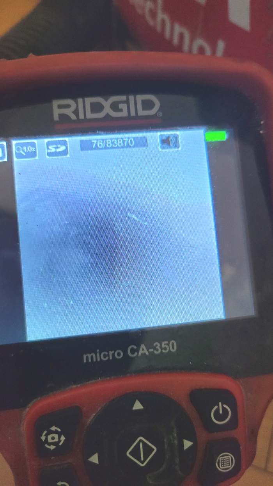
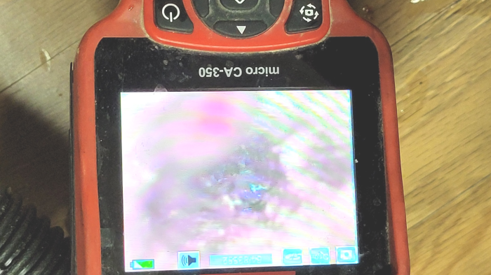
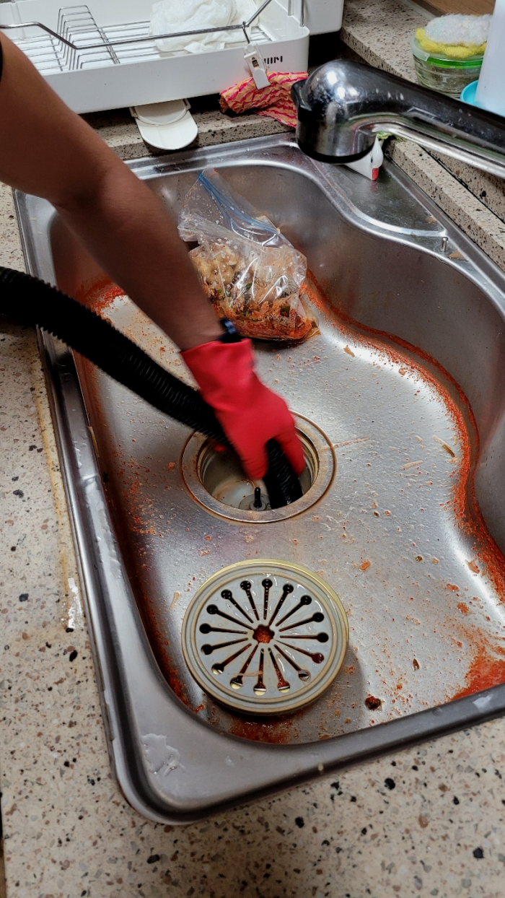
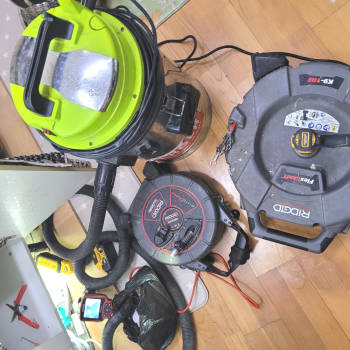
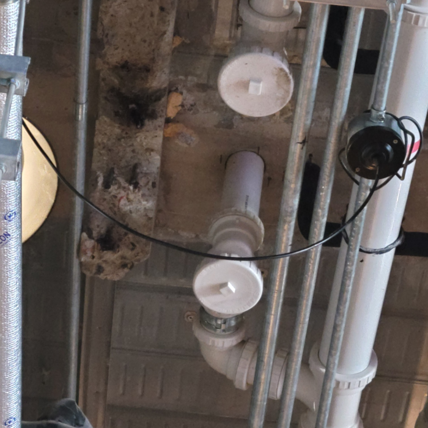

🏠 새솔동 씽크대 배수구막힘 해양동 하수도역류 배관수리 뚫는업체
용인 새솔동 싱크대막힘 전문 시공 후기

📋 작업 개요
- 위치: 용인 새솔동, 새솔동, 용인
- 서비스 유형: 싱크대막힘, 변기막힘, 하수구막힘, 배관막힘, 역류해결, 뚫는업체, 배관청소, 고압세척, 설비공사
- 작업 일시: 2024. 3. 7. 19:10
- 업체명: 하수구수사대 (010-5615-2118)
🔍 문제 상황
반갑습니다!
설비전문업체 "하수구수사대"를 찾아주셔서 감사드려요^^
이번처럼 배수구막힌 상태라면 아무리 열심히 해도 그대로라고 말씀을 드렸고 이번 기회에 왜 배수구에 이물 지을 제거해야 하는지도 알려드렸습니다. 그랬더니 몰랐다고 하시면서 그래서 배수구가 막혔구나 하시면서 저희보고 이제는 관리를 잘하겠다고 말씀을 하셨습니다.
새솔동 씽크대 배수구막힘 해양동 하수도역류 배관수리 뚫는업체
배출관 속을 진단하게 해주는 내시경 장비라든지 고압세척기와 샤프트 장비 등 고압세척기와 샤프트 장비 등 문제가 발생한 하수구의 위치와 이에 맞게 뚫을순 있는지 검토하시는 것도 중요하다고 할 수 있습니다.

🔎 원인 분석
💡 전문가 진단: 새솔동 씽크대 배수구막힘 해양동 하수도역류 배관수리 뚫는업체
출장을 나갈 때에는 배수배관이 일반적이 않거나 유선상으로 확인이 어려울 시에 출장나가 확인해 드립니다. 현장에 직접 나가보고 진단을 거치고 나야 견적을 안내해 드릴 수 있기 때문에 그때 가서 이야기 들으시고 고민하실 수 있게 하고 있습니다.
하수관배관 안에는 아주 많은 양의 기름 덩어리들이 보이는 상황이었습니다. 하수관배관의 내부는 기름 덩어리들이 굳으면서 단단한 고착 물질로 대부분 막혀있는 상황이었는데요. 이물질들이 지나가면서 배출이 되기는 쉽지 않을 거라는 생각이 들었습니다.
퇴수막힘은 얼마나 비용이 들어갈지 모르기 때문에 고민되는 것은 당연합니다만, 시간이 흐를수록 들어가는 비용도 늘어나기 때문에 증상이 발견됐을 때 당장 고칠 생각이 없더라도 얼마나 심각한 것인지 견적 정도는 받아보시고 고려해 보시는 것이 좋습니다.
사후서비스 까지 확실하게 책임진다는마인드라면 기본가격을 문의해 보세요. 기본가격은 대부분의 업체가 비슷한 선일 텐데요. 기본작업 후 배출관 배관내시경으로 여러분의 배관을 검수했을 때 만약 막힘 정도가 심각한 상태라면 추가작업이 필요할 수도 있습니다.
배수의 경우에는 오염 물질 등이 계속해서 통과한다는 특징을 가지고 있는데요. 이러한 점으로 인해 악취 또는 오염이 발생할 가능성이 큰 장소라고 할 수 있어요.

🔧 작업 과정
대부분 인터넷 검색을 통한 해결법을 적용하십니다. 하지만 상황에 맞지 않는 방법을 선택하거나 무리하게 적용할 경우 배출구에 손상이 가 오히려 공사 과정이 커질 수 있습니다. 이에 따라 조금이라도 아끼려던 비용과 시간이 더 크게 소모되는 만큼 문제 인지 즉시 저희에게 연락해 주세요.
특히 긴박한 마음에 하수도전문 업체에 연락해 주시는 분들은 도농동 배관 물이 바닥까지 흘러넘쳐 당황스러움에 어찌할 바를 모르시는데요. 아무래도 하수도 오수다 보니 더러운 부유물과 부스러기들이 섞여 불쾌한 냄새까지 함께 몰려와 당황스럽게 하기도 합니다.
저희회사는 뚫지못했다면 어떠한금액도 청구하지않고있어요.게다가처리해드리고 사후에도관리를 해드리고있는데요. 배수막힘이 다시발생되었을땐 잘못된버릇으로 막힌것을제외하고 AS서비스를 하고있어요 또한연락을주신다면 1시간안으로 출동하고있습니다.
안아까운 느낌을받으시길 바라기때문에 변기막힘을제외하고 수리해드린곳은 365일내로 하수도 또다시막히시면 불찰로나온 문제가아닐시에는 AS를제공하고있답니다
고객님의 허락을 받은 후 저희는 본격적으로 스케일링 작업을 시작하기에 앞서 석션기 작업을 시작하였습니다. 석션기 작업을 하지 않고는 퇴수 배관이 꽉 막혀 장비가 들어갈 틈도 없기에 청소가 어렵습니다. 따라서 1차로 석션기를 활용하여 막힌 곳을 뚫어주고 공간을 넓혀 장비가 잘 투입될 수 있도록 만들어주는 과정을 거쳐야 합니다.
저희 포스팅을 읽으시는 고객님들도 아시겠지만, 그동안 소개 드린 출동 사례 또한 매우 다양하기에 이를 바탕으로배수관막힘 상담 연락을 주신다면 빠르고 친절한 상담 도와드리겠습니다.
아랫부분의 고리에 여러 가지 이물질도 걸려 나올 수 있게 되어있어 벽면부터 덩어리진 기름 슬러지, 다른 이물질까지 여러 가지를 한 번에 작업할 수 있습니다. 작업이 어느 정도 일단락되면 석션 장비로 이 모든 이물질을 빨아당깁니다.
션 작업은 떨어진 석회들을 흡입해서 빼내는 작업으로 석션기를 사용해서 이물질들을 다 제거하고 나서 하수구 안을 살펴봅니다. 배수배관 안을 보니 작업을 진행하기 전과 후의 모습이 완전히 다르며 전혀 다른 배수배관이라는 생각이 들 정도로 깔끔해진 걸 확인할 수 있었습니다.


✅ 작업 완료
상황이 엉망인 상태에서 변기를 전혀 사용하지 못하고 있다면, 배출관전문설비업체를 불러 확인하고 수리를 맡겨보세요. 그게 최선의 방법입니다.
퇴수 관련된 곳이라면 무엇이든 도맡아 하고 있으니 늦어지기 전에 막힌 배수관을 뚫어내고 싶으신 경우 밤낮없이 대기 중이니 통화 걸어 주시면 친절하게 맞이해 안내해 드립니다.
#하수구막힘 #하수구뚫음 #하수구역류 #씽크대막힘 #싱크대역류 #오수관막힘 #하수구청소 #욕실하수구막힘 #변기막힘 #하수구뚫는비용 #싱크대수리 #화장실막힘




⚠️ 주방 싱크대 배관 막힘 예방 수칙
- ✅ 기름기가 묻은 식기나 프라이팬은 설거지 전 키친타올로 반드시 기름때를 닦아내세요.
- ✅ 주기적으로 싱크대 개수대에 뜨거운 물을 가득 받아 한 번에 내려 배관 내부 기름을 씻어내세요.
- ✅ 배수구 거름망을 미세한 필터로 사용하시고 음식물 찌꺼기가 틈으로 새어 들지 않게 관리하세요.
- ✅ 베이킹소다와 식초를 뜨거운 물과 함께 일주일에 한 번씩 부어주면 배관 살균과 막힘 예방에 좋습니다.
💡 핵심 정리
- 확실한 장비 작업(내시경 점검 및 샤프트 스케일링)으로 원인을 뿌리 뽑습니다.
- 작업 후 1년 이내에 동일한 부위 재발 시 100% 무상 A/S 서비스를 보장합니다.
- 서울 · 경기 · 인천 전 지역에 24시간 언제든 긴급 출동할 수 있도록 항시 대기 중입니다.
❓ 자주 묻는 질문 (FAQ)
🚨 용인 새솔동 싱크대막힘 문제로 고민이신가요?
정확한 원인 진단과 확실한 시공으로 재발 없는 해결을 약속드립니다.
24시간 긴급 출동 | 서울 · 경기 · 인천 전지역 | 1년 내 재발 시 무상 A/S